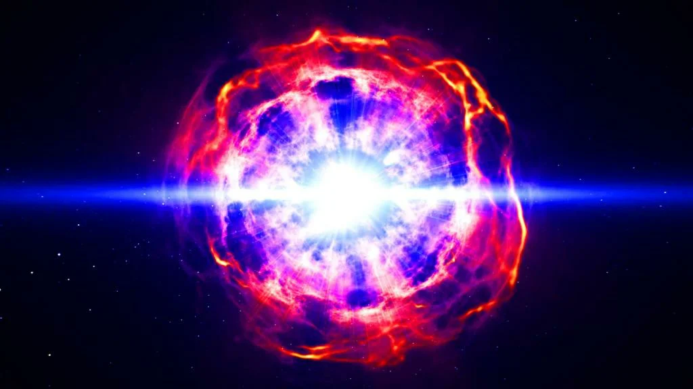

информация
Сверхновая звезда или вспышка сверхновой — явление, в ходе которого звезда резко увеличивает свою яркость на 4—8 порядков (на 10-20 звёздных величин) с последующим сравнительно медленным затуханием вспышки[1][2]. Является результатом катаклизмического процесса, возникающего в конце эволюции некоторых звёзд и сопровождающегося выделением огромного количества энергии
Как правило, сверхновые звёзды наблюдаются постфактум, то есть когда событие уже произошло и его излучение достигло Земли. Учёные-астрофизики до сих пор не могут разгадать феномен природы происхождения сверхновых. Но сейчас предлагается довольно много сценариев, приводящих к подобного рода вспышкам, хотя основные положения уже достаточно понятны.
Любая смерть звезды - самое яркое событие во Вселенной, при котором в межзвёздное пространство устремляются ударные волны по всей траектории. Взрыв сверхновой звезды длится периодичностью от 5 до 10 секунд, но энергия от вспышки сопровождается выбросом значительной массы вещества из внешней оболочки звезды в межзвёздное пространство, а из оставшейся части вещества ядра взорвавшейся звезды, как правило, образуется компактный объект — нейтронная звезда, если масса звезды до взрыва составляла более 8 солнечных масс (M☉), либо чёрная дыра при массе звезды свыше 40 M☉ (масса оставшегося после взрыва ядра — свыше 5 M☉). Вместе они образуют остаток сверхновой.
 История Вселенной